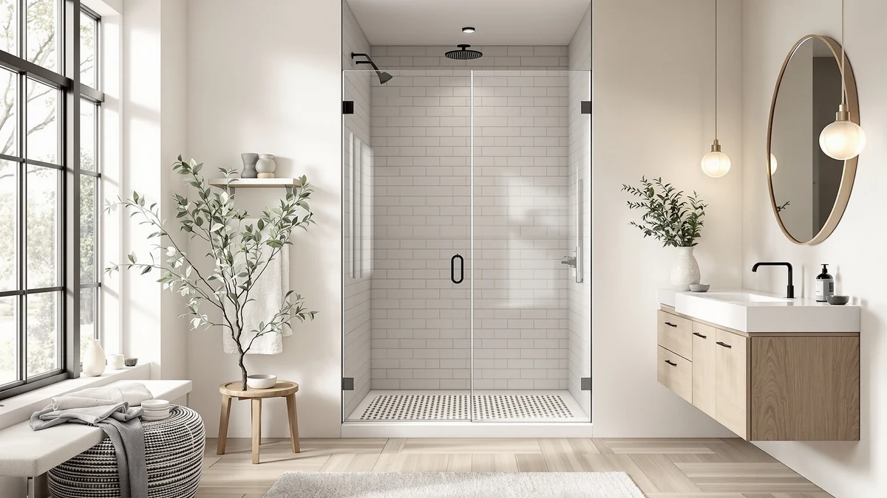

DreamLine Encore 56 60 Review (2026): Worth It?
Prices and picks verified as of October 2026. Independent, reader-supported reviews.


Quick Answer
The DreamLine Encore 56-60 in. W is the strongest overall pick for a 56 to 60 inch alcove opening, priced at $671.49. It costs more than the three sliding doors we compared it against in this review, but its wider adjustable range and taller 76 inch height make it the safer fit for most standard shower stalls.
Our pick: DreamLine Encore 56-60 in. W — $671.49 Check Price on Amazon
Bottom line: our top pick is the DreamLine Encore 56-60 in. W x 76 in. H Semi-Frameless Bypass at $671.49.
Things to Know Before You Buy
- The Encore 56-60 in. W fits alcove openings between 56 and 60 inches wide, so measure your opening at the top, middle, and bottom before you order.
- At $671.49, it costs $84.71 more than the LMLMD Frameless Double Sliding Shower Door and over $350 more than the EASYWORC and Leramaner options in this dreamline encore 56 60 review.
- Its 76 inch height runs taller than the specs listed for the alternatives here, which matters if your shower stall has higher-than-standard walls.
- We built this review on manufacturer specifications, current Amazon pricing, and patterns in verified buyer feedback rather than hands-on installation.
This dreamline encore 56 60 review looks at whether the $671.49 price tag earns its keep on a shower door built around a 56 to 60 inch alcove opening and a 76 inch height.
We compared the DreamLine Encore 56-60 in. W against three other sliding shower doors: the LMLMD Frameless Double Sliding Shower Door, the EASYWORC 36-38 in. W x 72 in., and the Leramaner Frameless Glass Shower Door Sliding. We weighed price, size range, and what verified owners say after buying each one. The Encore comes out ahead if your opening sits at the wider end of that 56 to 60 inch range and you want the extra height clearance.
Why You Should Trust Us
Ilane Tall covers bathroom hardware and shower systems for Best Shower Doors, and this DreamLine Encore 56-60 in. W review follows the same research process used across every guide on this site. We pull current pricing and dimensions straight from Amazon listings, cross-check them against manufacturer specs, and read through verified buyer reviews for recurring patterns in fit, finish, and durability. We do not run a fake testing lab or claim to have installed every door we cover here. When we cannot verify a claim, we say so instead of guessing at an answer.
This site earns a commission if you buy through our links, and we disclose that on every page. That arrangement does not change which door we recommend first. We ranked the Encore above the cheaper alternatives in this comparison because its specs justify the gap, not because it pays a higher commission, and we would say so plainly if the opposite were true.
Our Research Process
Our process for this dreamline encore 56 60 review starts with the manufacturer's published dimensions, since fit matters more than almost anything else with a sliding shower door. From there we compare current Amazon pricing across competing doors in the same size class and read through verified owner reviews for recurring complaints about leaks, track alignment, or glass quality. We did not install this door or any of the alternatives ourselves. Instead, we researched how real buyers describe living with each one after purchase and weighed that against the specs each listing provides.
That approach has limits. It cannot catch a defect that only shows up during installation, and it depends on sellers keeping their size and price listings accurate. We flag those gaps where they matter instead of papering over them with vague praise.
We also check whether a listing's stated size range lines up with what the manufacturer publishes elsewhere, since third-party sellers sometimes round dimensions in ways that matter once you are standing in front of your own shower opening with a tape measure. For a door like the Encore, where the whole pitch rests on a wider adjustable range, that cross-check carries more weight than it would for a fixed-size product.
Overview & Specs

DreamLine Encore 56-60 in. W
What we like
- Adjustable 56 to 60 inch width covers a wider range of alcove openings than most competing doors
- 76 inch height gives more clearance than the shorter alternatives in this comparison
- DreamLine has a long track record in the sliding shower door category, which lowers the risk of buying from an unfamiliar seller
Flaws but not dealbreakers
- At $671.49, it costs well over double the price of the EASYWORC and Leramaner options we compared it against
- The listing does not specify glass thickness or finish options, so confirm those details with the seller before you order
| Material | — |
| Size | 56-60 in. W x 76 in. H |
DreamLine designed the Encore 56-60 in. W for alcove shower openings, with an adjustable width that spans 56 to 60 inches and a fixed height of 76 inches. That extra height compared with the other doors in this dreamline encore 56 60 review matters if your existing shower walls run taller than standard, since a short door leaves an awkward gap at the top of the opening that lets water and steam escape.
At $671.49, it sits well above the LMLMD, EASYWORC, and Leramaner doors we compared it against, all of which list under $600. DreamLine has sold sliding shower doors for years, and that track record is part of what you pay for here. If your opening falls in the middle of the 56 to 60 inch range and you do not need the extra height, one of the cheaper alternatives below may get you the same result for less money.
What We Liked
The strongest selling point for the DreamLine Encore 56-60 in. W is flexibility. A 56 to 60 inch adjustable range covers more alcove openings than fixed-width doors, so you do not need to special-order an exact size if your opening measures 57 or 59 inches instead of a round number. Reviewers consistently note that this adjustability simplifies installation when a bathroom wall is slightly out of plumb, which is common in older homes.
The 76 inch height also stands out next to the alternatives in this dreamline encore 56 60 review. Owners report that the taller profile closes gaps at the top of the shower stall that shorter doors leave open. That means less water escapes over the top during a normal shower. DreamLine's name recognition in this category gives buyers more confidence in parts availability and warranty support than a newer, lesser-known brand offers.
You also get more flexibility if your bathroom plans change later. A homeowner who widens a shower opening during a future renovation, even by an inch or two, can usually stay within the Encore's 56 to 60 inch range instead of buying an entirely new door. That is a small advantage, but it adds up if you expect to remodel again within the life of the glass.
What Could Be Better
Price is the clearest drawback. At $671.49, the Encore costs more than double what the EASYWORC and Leramaner doors in this comparison ask, and $84.71 more than the LMLMD option. That gap is hard to justify if your opening does not need the extra height or width range the Encore offers.
The product listing is also light on finish and glass thickness details, so you are left confirming those specs with the seller or through DreamLine's own site rather than finding them upfront. Buyers researching this dreamline encore 56 60 review should also budget extra installation time, since a wider, taller sliding door generally takes longer to align and seal correctly than a smaller unit.
None of that makes the Encore a bad door. The premium you pay buys brand reputation and a wider fit window more than it buys information you can act on before purchase. If you need those specifics locked down before you order, plan on reaching out to DreamLine directly or reading through enough verified reviews to spot a pattern.
Who Is It For?
This door makes sense for you if your alcove shower opening measures close to 60 inches wide, or if your existing stall has taller walls than a standard 72 inch door would cover. It is also a reasonable pick if you would rather pay more for a recognized brand name than take a chance on a newer manufacturer.
Skip it if your opening is narrower than 56 inches, since you would be paying for width adjustability you cannot use, or if your budget caps out well under $600. In that case, the EASYWORC or Leramaner doors below cover similar sliding mechanics for less money.
You should also weigh how long you plan to stay in the home. If you are renovating a house you intend to sell within a year or two, the cheaper alternatives in this dreamline encore 56 60 review may deliver nearly the same buyer appeal for less upfront cost. If you are renovating for the long haul, the Encore's wider fit range and brand backing carry more weight.
Alternatives to Consider
If the price or size range of the DreamLine Encore does not fit your bathroom, here are three sliding shower doors we compared it against in this dreamline encore 56 60 review.

Editor's Pick
Frameless Double Sliding Shower Door
A frameless double-sliding design at $586.78, about $85 less than the Encore, with a similar frameless look for buyers who want to save without giving up the sliding mechanism.
$586.78
Check Price on Amazon
Best Value
EASYWORC 36"-38" W x 72"
Built for a narrower 36 to 38 inch opening at $319.89, this is the pick if your shower stall is smaller than the Encore's 56 to 60 inch range and you want to spend less than half as much.
$319.89
Check Price on Amazon
Premium Choice
Framless Glass Shower Door Sliding
A frameless glass sliding design at $299.99 that prioritizes a clean, glass-forward look if that matters more to you than matching the Encore's height range.
$299.99
Check Price on AmazonFrequently Asked Questions
What size shower opening does the DreamLine Encore 56-60 in. W fit?
It fits alcove openings between 56 and 60 inches wide and 76 inches tall, so measure your opening at the top, middle, and bottom before you order, since older walls are rarely perfectly square.
Is the DreamLine Encore worth the extra cost over cheaper sliding doors?
Only if your opening needs that 56 to 60 inch width range or the taller 76 inch height. At $671.49 it costs more than double the EASYWORC and Leramaner doors in this dreamline encore 56 60 review, so a narrower or shorter opening does not need this door's extra capacity.
How does the DreamLine Encore compare to the LMLMD Frameless Double Sliding Shower Door?
The LMLMD costs $586.78, about $85 less than the Encore's $671.49, and offers a similar frameless double-sliding design. Pick the Encore if you need its taller 76 inch height, and pick the LMLMD if your opening does not require that extra clearance and you want to save money.
Final Verdict
This dreamline encore 56 60 review comes down to fit and budget. The DreamLine Encore 56-60 in. W is the strongest choice for a wider, taller alcove opening, backed by a brand with a long track record in sliding shower doors, even though its $671.49 price sits well above the alternatives we compared. If your opening is narrower or your budget is tighter, the LMLMD, EASYWORC, or Leramaner doors above are worth a look instead.